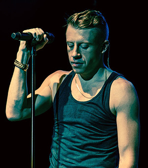

M & RL are a American hip hop duo formed in 2009, from Seattle, Washington. The duo is composed of Ben Haggerty, a rapper who goes by the name of Macklemore and Ryan Lewis, a record producer, DJ, and professional photographer, who met the former at a photo shoot and they have significantly collaborated ever since. In 2009, they released their first collaborative effort, an EP titled VS. EP. They have since followed up with VS. Redux (2010) and the Grammy Award-winning album The Heist (2012). Click here to see a picture of Macklemore and Ryan Lewis.
Members
Macklemore (Vocals)
 Macklemore performing in Toronto during The Heist Tour in November 2012
Ryan Lewis (Producer/ DJ)
Lewis performing with Macklemore in February 2013
Career Albums
Open Your Eyes EP
The Language Of My World
The Unplanned Mixtape
The VS. EP
The Heist
Awards
American Music Awards 2013
Artist Of The Year (Nominated)
Favorite Rap/Hip-Hop Artist
Favorite Rap/Hip-Hop Album (For "The Heist")
BET Awards 2013 & 2014
Best Group (2013)
Video of the Year (Nominated, 2013, for "Thrift Shop")
Best Group (Nominated, 2014)
Billboard Music Awards 2013 & 2014
Rap Album of the Year (Nominated, 2013, for "The Heist")
Rap Song of the Year (2013, For "Thrift Shop")
Top Rap Artist (Nominated, 2014)
Top Rap Song (2014, for "Can't Hold Us")
Grammy Awards 2014
Best New Artist
Album of the Year (Nominated)
Best Rap Album
Song of the Year (Nominated, for "Same Love")
Best Rap Performance (For "Thrift Shop")
Best Rap Song (For "Thrift Shop")
Personal History
Macklemore
Macklemore has two siblings. He became engaged to his girlfriend of seven years, Tricia Davis, on January 21, 2013. Macklemore voiced his support of LGBT rights and same-sex marriage in the song "Same Love", which also condemns homophobia in mainstream hip-hop, society, and mass media.
In August 2008, Macklemore admitted himself into rehab for drug addiction and alcoholism, and celebrated two years of sobriety before a brief relapse in 2011, which he describes in his song "Starting Over". He said in a 2012 documentary that he spent most of his twenties trying to combat his addictions and destructive way of life, saying "I want to be someone who is respected and not just in terms of my music. I want to be respected in terms of the way that I treat people... Music is my creative outlet in terms of expressing what is important to me; what has importance, what has a value. And I want to be respected for that."
Macklemore is a fan of the Major League Baseball team the Seattle Mariners. He dedicated his song "My Oh My" as a tribute to sportscasterDave Niehaus, who died in November 2010, with a performance before 50,000 fans who attended the 2011 Mariners Opening Day at Safeco Field. Following the performance, Macklemore & Ryan Lewis were each awarded a custom jersey embedded with a Mariners patch. He has acknowledged baseball and hip hop music as not being "intrinsically linked", "a bunch of people that are Mariners fans probably don't consider hip hop, like, real music still". Ryan Lewis announced that all proceeds from the song benefit the Rainier Vista Boys and Girls Club. He also supports the Seattle Seahawks.
Ryan Lewis
Ryan Lewis was born on March 25, 1988 in Spokane, Washington, to Julie and Scott Lewis. Lewis has two sisters, Teresa and Laura, four years and two years older than him, respectively. At an early age, he played guitar in rock bands, and nursed a growing interest in music production around the age of 15. He attended Ferris High School in Spokane, Washingtonand graduated from Roosevelt High School in Seattle. He graduated from the University of Washington majoring in Comparative History of Ideas.
Lewis became a professional photographer and videographer and started to take photos for Macklemore in the summer of 2006. In late 2008, after having produced a few trial run songs together, they collaborated fully on a project that later became the VS. EP.


{kind=link}
{kind=link}